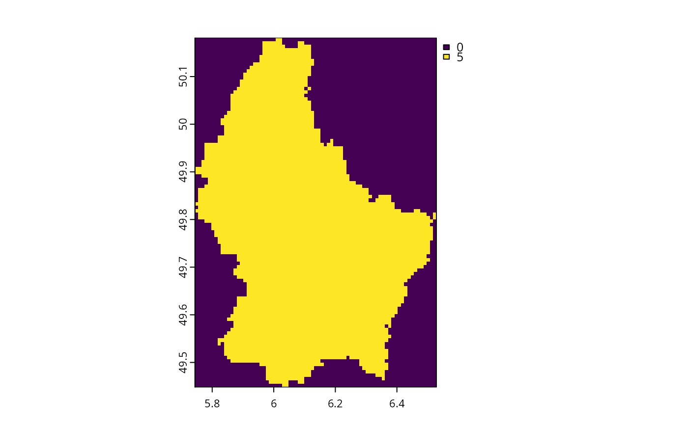

Convert vector data into a raster using GDAL
Source:R/terra_gdal_rasterize.R
terra_gdal_rasterize.RdThis function is a wrapper for gdalUtilities::gdal_rasterize() for use with
terra objects.
Usage
terra_gdal_rasterize(
x,
sf,
burn = 1,
init = 0,
invert = FALSE,
update = FALSE,
touches = FALSE,
n_threads = 1,
filename = tempfile(fileext = ".tif"),
sf_filename = tempfile(fileext = ".gpkg"),
datatype = "FLT4S",
cache_limit = 200,
tiled = FALSE,
bigtiff = FALSE,
nbits = NULL,
compress = "LZW",
NAflag = NULL,
output_raster = TRUE
)Arguments
- x
terra::rast()Raster object with source data.- sf
sf::st_sf()Spatial object to rasterize.- burn
numericValue for encoding the vector data. Defaults to 1.- init
numericValue for encoding background cells that do not overlap with the vector data. Defaults to 0.- invert
logicalShould the burn process be inverted? Defaults toFALSE.- update
logicalShould the result by producing by updating the argument tox? IfFALSEthen the argument toxis only used to specify the spatial properties of the resulting raster (i.e., values have on the result), Defaults toFALSE.- touches
logicalShould cells ofxthat are overlap with any part ofsfbe treated as covered bysf? Defaults toFALSE, such that only cells that have their centroid covered bysfare treated as covered.- n_threads
integerNumber of computational threads to use for data processing. To reduce run time, it is strongly recommended to set this parameter based on available resources (see Examples section below). Defaults to 1.- filename
characterFilename for output raster. Defaults totempfile(fileext = ".tif").- sf_filename
characterFile name to temporarily save argument tosf. Defaults to a temporary (geopackage) file.- datatype
characterValue indicating the data type for saving data. Defaults to"FLT4S".- cache_limit
integerNumber of MB to use for GDAL caching. Defaults to 200.- tiled
logicalValue indicating if GeoTIFF files should be tiled. Defaults toFALSE.- bigtiff
logicalValue indicating the data should be stored in BIGTIFF format. Defaults toFALSE.- nbits
integerNumber of bits for output data. Defaults toNULLsuch that the number of bits is automatically determined.- compress
characterValue indicating compression format. Available options include"LZW"and"DEFLATE". Defaults to"LZW".- NAflag
numericValue for representing missing (NA) values. A"none"value can also be used to indicate that no flag should be set. Defaults toNULLsuch that the value is determined automatically.- output_raster
logicalShould a raster (terra::rast()) object be returned? IfFALSEthen the file path for the resulting file is returned. Defaults toTRUE.
Value
A terra::rast() raster object.
Examples
# please ensure that the gdalUtilities package is installed
# to run this example
# import vector data
f <- system.file("ex/lux.shp", package = "terra")
sf <- read_sf(f)
# create template raster
x <- rast(vect(sf), ncols = 75, nrows = 100)
x <- terra::setValues(x, runif(terra::ncell(x)))
# rasterize vector data
z <- terra_gdal_rasterize(x, sf, burn = 5)
# plot result
plot(z)
